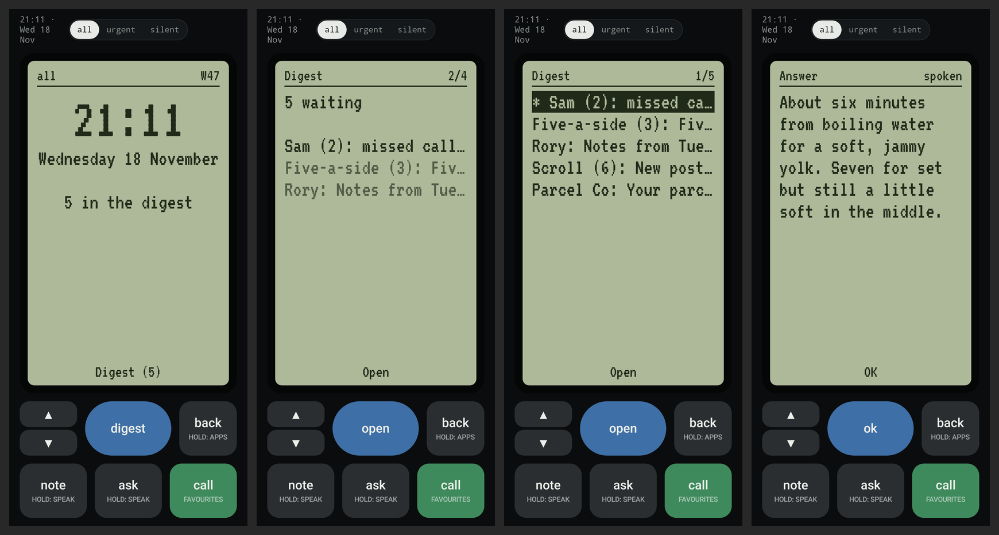

A home screen for Android that turns a smartphone into a calm, sleep-first device: a monochrome panel, seven keys, and an AI layer that waits until you ask. It runs on any phone with Android 8.0 or newer, so an old phone from a drawer can be the Brick.
The ideas behind it: pull, never push; finite by default; hands before eyes; people, not feeds.
What it does
| Key | Tap | Hold |
|---|---|---|
| ▲ ▼ (or the volume keys) | Scroll; on the sleep screen, flip glance cards | |
| Navi | Open, select, done | |
| back | Back | Every app, plus Brick settings |
| note | Type a note | Speak a note |
| ask | Type a question | Speak a question; the answer is read aloud |
| call | Your favourites, then the dialpad |
- The digest. Brick reads every notification and folds them into one line per person or thing: a group chat is one line, a favourite is one line across every app, and a feed's three hundred posts are a few lines. Everything except favourites can be held off the phone's own shade until you choose to look.
- Favourites break through with a vibration. So do a few rules for real emergencies: a second missed call from the same person within minutes, the same person trying again, or an emergency word in a one-to-one message. Unsure cases stay in the digest with the reason on the line.
- Glance cards on the sleep screen: the next calendar event, what is waiting in the digest, and this week's counts.
- Notes, kept on the phone and optionally written as Markdown files into a folder you pick, such as an Obsidian vault.
- Ask: one short answer from Mistral, Anthropic, or any OpenAI-compatible endpoint. The key stays on the phone.
- The quiet switch at the top sets the phone's real Do not disturb mode.
Brick's own screens at Galaxy S25 size, rendered from the app's code with made-up notifications.
Two phones
The bigger aim is to carry a small, clean Brick for a whole day and leave the main phone at home, without anyone who needs you failing to reach you.
- The main phone sends one short push when someone breaks through. It says who and through which app, never what they wrote, and it can be sealed so the push server never sees who either.
- The carried Brick pulls the digest when you unlock it or open the digest, over a private network. It is never pushed.
- A heartbeat tells the Brick the main phone is still there; if it goes quiet, the Brick says so.
- A small Wear OS app and a fitness-band buzz are being tried for carrying a break-glass alert to the wrist.
How it is built
- Plain Java, no libraries. The whole interface is built in code, and the APK is about 120 KB.
- Measured before it is changed. A usage log (what happened and when, never what was said) and a timing log of every notification and how it went away turn a day of real use into interrupt numbers: unlocks, alerts, reaction time, time to an empty digest.
- The break-glass rules are tested against a labelled set of staged notifications on every build: 73 cases, every real emergency caught (recall 1.00), precision 0.90. An optional model step can look only at the unsure cases, and can raise one but never hold anything back.
- Simulated users. Ten scripted personas (a family favourite, a group chat, feed apps flooding, calls and alarms, odd notifications, Ask against a fake model, voice with no speech service) press Brick's real keys on Android 15 and Android 10 emulators, with fake apps posting the notifications, and report what broke.
- Model output is never trusted. Summaries are kept only if they are shorter than the message, hold no link or address, and show no prompt-injection phrasing; a hostile model's line found on a real phone was fixed and retested the same day.
- Safe if lost. The phone-to-phone server answers only the private network and locks out repeated wrong tokens; a signed command can lock, ring or wipe a lost Brick; and a CI test refuses anything shaped like a key in the shipped sources.
Where it is
In daily use on a Samsung Galaxy S25, with an old Huawei phone for testing. The two-phone setup is being built in steps, each tried on a real phone before the next; the wrist alerts are still being tried.
How it was made
Designed by Will Douglas and built with AI coding assistants (Claude Code and GitHub Copilot).